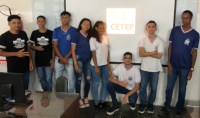

Alunos do 3°ano de Informática membros do projeto

Adailton
Bruno Oliveira Santos
Clécio Alessandro Jesus Oliveira
Edivaldo De Jesus Oliveira
Fábio de Jesus Xavier
José Amilton jesus Silva
Lohane Santos Anjos
Sara Luana De Oliveira Souza